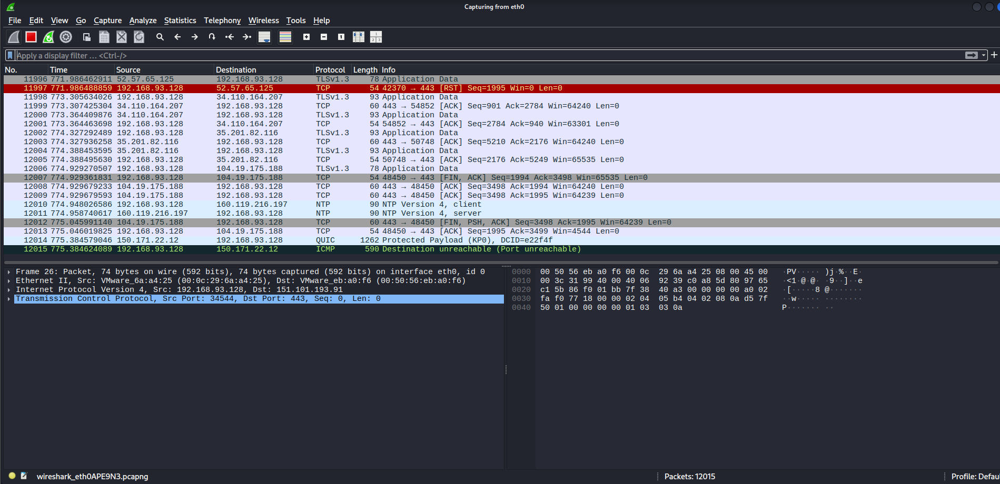
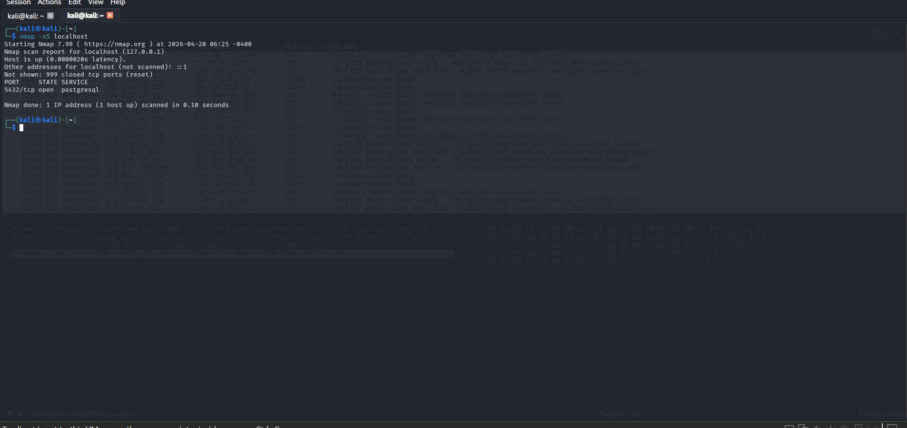
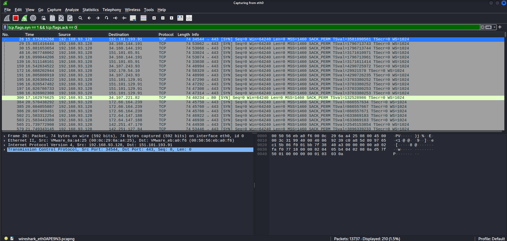
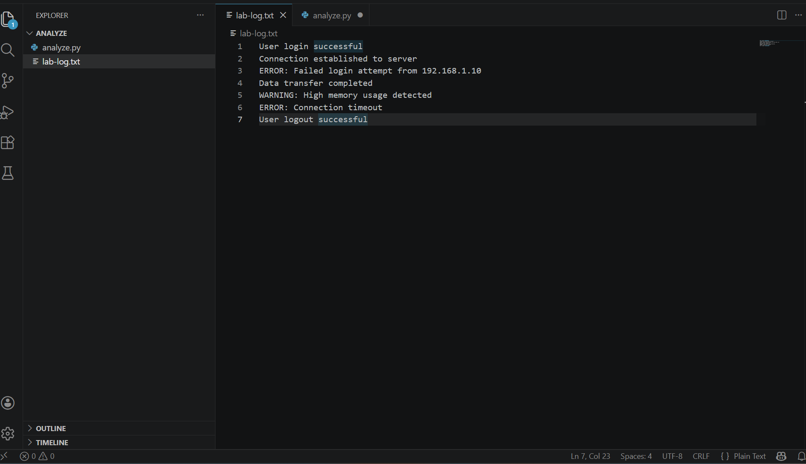
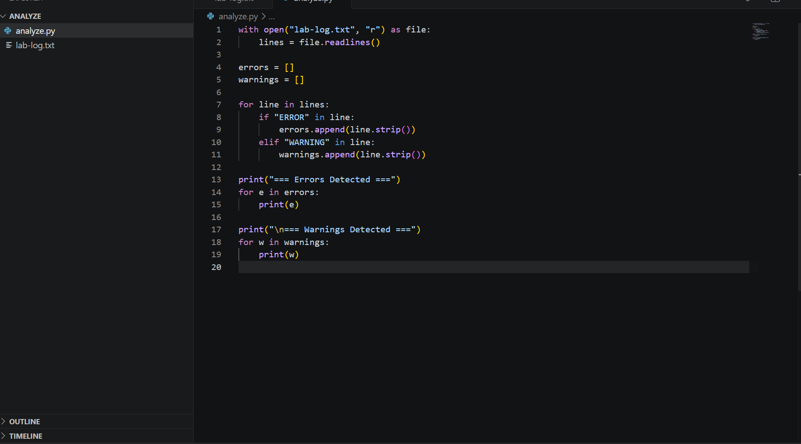
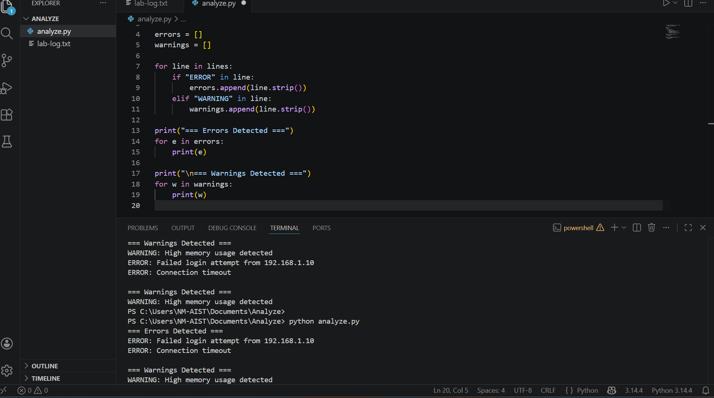

Objective:
Simulate network activity through a port scan and analyse captured traffic using Wireshark in order to identify reconnaissance behaviour.
Traffic Capture:

Tools Used:
Methodology:
nmap -sS localhostAttack Simulation:

Proof of Concept:
Applied filter tcp.flags.syn == 1 && tcp.flags.ack == 0 to isolate SYN packets.
The capture shows traffic from source IP 192.168.93.128 sending multiple SYN packets to different destination IP addresses over port 443 (HTTPS).
The repeated SYN packets without ACK responses indicate incomplete TCP handshakes, which is consistent with port scanning activity.
Filtered Traffic Analysis:

Explanation:
The observed behaviour demonstrates reconnaissance activity where a system scans multiple hosts to identify open ports and available services. This type of activity is commonly used as a preliminary step before launching further attacks.
Objective:
Automate the analysis of log data to reduce manual effort and quickly identify important events such as errors and warnings.
Raw Log Data:

Problem:
Manual analysis of logs is time-consuming and inefficient, especially when dealing with large datasets.
Approach:
Tools Used:
Automation Script:

Proof of Concept:
The script reads a log file and automatically extracts important events by identifying specific keywords.
Sample Logic:
for line in lines:
if "ERROR" in line:
errors.append(line)
elif "WARNING" in line:
warnings.append(line)
The script successfully identified:
Script Output:

Security Insight:
The detection of failed login attempts demonstrates how automated log analysis can be used to identify potential security threats such as brute-force attacks.
Results:
What I Learned: